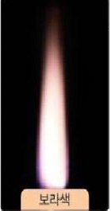
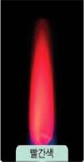
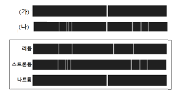
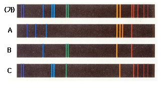

I. 물질의 구성
1. 물질의 기본 성분
01. 물질을 이루는 기본 성분
- 물질을 이루는 기본 성분을 라고 한다.
- 지금까지 알려진 원소의 종류는 가지 이다.
- 물을 이루는 원소는 ?
- 원소는 다른 물질로 분해( 된다, 되지 않는다).
- 원소의 종류는 가지이지만 물질의 종류는 훨씬 더 많다. 그 까닭은 무엇인지 설명해 보자.
... ...............................
원소, 118, 수소 산소, 되지 않는다.
원소의 종류는 제한적이지만 조합되는 원소의 종류와 수에 따라 다양한 종류의 물질이 만들어 질 수 있기 때문이다.
02. 원소를 확인하는 방법
- 원소의 불꽃 반응 - 원소 이름을 쓰세요.
 |  |  |  |  |  |  |
| 빨간색 | 노란색 | 보라색 | 청록색 | 주황색 | 빨간색 | 황록색 |
| 리튬 | 나트륨 | 칼륨 | 구리 | 칼슘 | 스트론튬 | 바륨 |
- 원소를 구별하는 다른 방법 - 스펙트럼 비교하기
 |
|
 |
|
 |
|
 |
... ...............................
나트륨, 칼슘, 리튬, 스트론튬

| A | B | C | D |
... ...............................
A: 나트륨, B: 칼슘, C: 리튬, D: 스트론튬
- 염화 나트륨과 질산 나트륨의 불꽃 반응 색은( 같고, 다르고),염화 나트륨과 염화 칼슘의 불꽃 반응색은 (같다 다르다).
- 원소의 선 스펙트럼은 원소의 에 따라 나타나는 선의 색깔, 위치,굵기,개수 등이 다르다.
- 요리를 하다가 음식의 간을 맞추려고 뿌린 소금이 가스 불꽃에 닿았더니 불꽃색이 노란색으로 변하였다. 그 까닭은 무엇인지 설명해 보자.
... ...............................
같고 / 다르다, 종류 ,
소금의 주성분인 나트륨의 불꽃반은 색깔이 노란색이기 때문이다.
tips_and_updates 원소에 대한 설명으로 옳은 것만을 < 보기 > 에서 있는 대로 고른 것은?
< 보 기 >
㉠ 모든 물질은 원소로 이루어져 있다.
㉡ 자연에서 발견된 118개의 원소로 구성되어 있다.
㉢ 원소마다 고유의 선스펙트럼을 가지고 있다.
① ㉠
② ㉡
③ ㉠, ㉡
④ ㉠, ㉢
⑤ ㉠, ㉡, ㉢
정답 : 4
해설 : 원소는 자연에서 발견된 것과 인공적으로 만들어진 것으로 구성
출처 : 2021년 1학기 중간고사
tips_and_updates 여러 가지 물질 속에 들어있는 원소를 조사한 것이다. 이 중 잘못된 것은?
물질 들어 있는 원소
① 유리컵 --- 규소, 산소
② 물 --- 산소, 수소
③ 비닐 --- 탄소, 수소, 염소
④ 공기 --- 질소, 산소
⑤ 지우개 --- 황, 질소, 고무
정답 : 5
해설 : 고무는 원소가 아님
출처 : 2021년 1학기 중간고사
tips_and_updates 다음 중 ‘더 이상 다른 물질로 분해되지 않으면서 물질을 이루는 기본 성분’이 아닌 것은?
① 탄소
② 수소
③ 구리
④ 물
⑤ 황
정답 : 4
해설 : 원소는 ‘더 이상 다른 물질로 분해되지 않으면서 물질을 이루는 기본 성분’ 이다.
출처 : 2019년 1학기 중간고사
tips_and_updates 다음 설명에 해당되는 물질만을 있는 대로 고르면?
< 보 기 >
㉠ 물질을 이루는 기본 성분이다.
㉡ 더 이상 다른 물질로 분해되지 않는다.
① 물
② 헬륨
③ 메테인
④ 알루미늄
⑤ 염화 수소
정답 : 2, 4
해설 : 더 이상 다른 물질로 분해되지 않으면서 물질을 이루는 기본 성분은 원소이다.
출처 : 2020년 1학기 기말고사
tips_and_updates 어떤 물질 (가)와 (나)의 선 스펙트럼이다. 아래의 리튬, 스트론튬, 나트륨의 선스펙트럼을 비교하여 다음 물음에 답하시오.
(1) (가)의 물질을 에탄올 수용액에 녹여 불꽃반응 실험을 하였을 때 나타나는 불꽃의 색은?
① 흰색
② 노란색
③ 보라색
④ 파란색
⑤ 빨간색
정답 : 2
해설 : 특정 금속원소의 경우 불꽃색이 뚜렷하므로 쉽게 구별가능하다.
(2) 스펙트럼 관찰 결과 (나)물질에 들어있는 것을 모두 고른 것은?
① 리튬
② 스트론튬
③ 나트륨
④ 리튬, 나트륨
⑤ 나트륨, 스트론튬
정답 : 5
해설 : 두 금속원소의 스펙트럼이 분명하게 나타나있다.
출처 : 2021년 1학기 중간고사
tips_and_updates 불꽃 반응과 선 스펙트럼에 대한 설명으로 옳지 않은 것은?
① 금속 원소 중 일부는 그 원소를 포함한 물질을 불꽃에 넣었을 때 특정한 불꽃 반응 색이 나타나는데, 이를 불꽃 반응이라고 한다.
② 불꽃 반응에서 나타나는 불꽃을 분광기로 관찰하면 특정 부분에서 밝은 선이 나타나는데, 이를 선 스펙트럼이라고 한다.
③ 염화 나트륨과 탄산 수소 나트륨은 불꽃 반응 색이 같지만, 불꽃 반응으로부터 관찰되는 선 스펙트럼은 서로 다르다.
④ 물질 속에 여러 가지 원소가 포함되어 있으면 그 물질의 선 스펙트럼에 각 원소의 선 스펙트럼이 모두 나타난다.
⑤ 원소의 선 스펙트럼은 원소의 종류에 따라 나타나는 선의 색깔, 위치, 굵기, 개수 등이 다르다.
정답 : 3
해설 : 염화 나트륨, 탄산 수소 나트륨의 불꽃 반응색은 노란색이고, 불꽃 반응을 관찰했을 때 나타나는 선 스펙트럼은 나트륨의 선 스펙트럼으로 같다.
출처 : 2020년 1학기 기말고사
tips_and_updates 그림은 물질 (가)와 원소 A, B, C의 선스펙트럼을 나타낸 것이다.

(1) 원소 A~C 중 물질 (가)의 성분 원소로 생각되는 것을 모두 고르시오.
(2) 그렇게 생각한 이유(근거)를 쓰시오. [2점]
... ...............................
정답 : (1) B, C
(2) 물질 속에 여러 가지 (금속) 원소가 섞여 있어도 각 원소의 고유한 선스펙트럼이 모두 나타나기 때문
출처 : 2017년 1학기 중간고사
tips_and_updates 다음은 중학생들이 화려한 불꽃놀이를 보면서 나눈 대화이다. 다음 중 불꽃놀이에 대해 잘못 말한 학생을 모두 고르면?
민수 : 이야~ 멋지다. 불꽃색이 알록달록 정말 멋져! 저 노란색 국화무늬 불꽃 좀 봐! 나트륨을 사용했나봐~
수현 : 우와~ 민수 너 과학 공부 꽤 열심히 했구나? (씨익 웃으며, 엄지 척!) 멋져!! 그런데 난 저 보라색 불꽃이 맘에 들어~ 칼슘의 불꽃색.. 정말 환상적이지 않니?
서우 : 난 황록색이랑 빨간색 불꽃이 인상적인 걸? 황록색은 바륨의 불꽃색이야! 그럼 빨간색은 어느 금속의 불꽃색인지 아는 사~람?
현빈 : 나~나~나! 나 알아! 빨간색 불꽃은 리튬이거나 스트론튬이거나... 둘 중 하나야! 둘은 불꽃색이 같아!
서우 : 이야~ 하나만 말할 줄 알았는데.. 현빈이 너 대단하다. 여기서 잠깐!! 그럼 불꽃색이 같은 원소는 영영 구별 못하는 거야?
현빈 : 과학시간에 애순쌤이 분광기로 불꽃색을 관찰하면 구별할 수 있다고 했어. 내가 수업을 좀 열심히 들었지~ (으쓱으쓱)
동형 : 맞아 맞아. 분광기로 관찰하면 연속스펙트럼이 보이거든. 불꽃색이 같아도 스펙트럼 모양이 다르게 나타나기 때문에 구별할 수 있는 거야!
① 민수
② 수현
③ 서우
④ 현빈
⑤ 동형
정답 : 2, 5
해설 : 보라색 불꽃색은 칼륨의 불꽃색이며, 원소의 스펙트럼은 선스펙트럼이다.
출처 : 2017년 1학기 중간고사